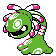

#296
Cradily
RockGrass
Abilities: Storm Drain, Stamina, Regenerator
Base stats BST 500
HP86
Attack81
Defense97
Speed43
Sp. Atk86
Sp. Def107
Evolution
None detected.
Level-up learnset
LevelMoveType
Lv. 1AstonishGhost
Lv. 1WrapNormal
Lv. 1ConstrictNormal
Lv. 1Leech SeedGrass
Lv. 1Power WhipGrass
Lv. 6AcidPoison
Lv. 12Confuse RayGhost
Lv. 15AncientpowerRock
Lv. 18Mega DrainGrass
Lv. 21Rock SlideRock
Lv. 24Giga DrainGrass
Lv. 31AmnesiaPsychic
Lv. 35Earth PowerGround
Lv. 39RecoverNormal
Lv. 43Energy BallGrass
Lv. 47Mirror CoatPsychic